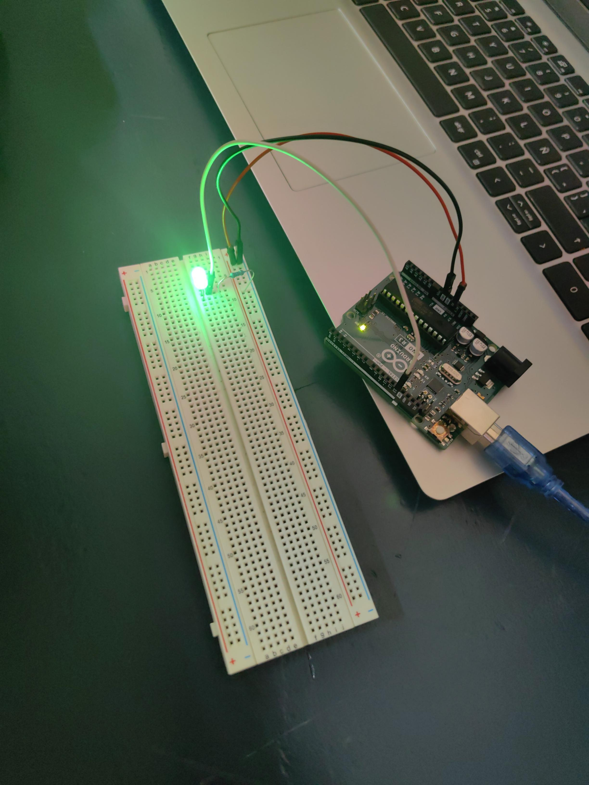

Contenido de la Página Web
Introducción a Arduino
Haz clic abajo para visualizar el material completo de la unidad:
Semana 1: Diseño de Circuitos en Tinkercad
En esta sesión pusimos en práctica los conceptos de Arduino mediante una simulación de semáforo con LEDs y resistencias.
Nota: En el video se observa el funcionamiento del circuito y la secuencia de encendido de los componentes.
Semana 2: Armado de Circuito en Físico
¡Del simulador a la realidad! En esta semana trasladamos el diseño de Tinkercad a los componentes reales, conectando la placa Arduino Uno a la computadora y armando el circuito en el protoboard.

Logros de la sesión:
- Conexión física de la placa Arduino Uno mediante el cable USB.
- Uso correcto del protoboard para energizar el circuito.
- Instalación de una resistencia para proteger el LED verde y evitar que se queme.
Semana 3: Optimización del Circuito en Tinkercad
En esta sesión nos enfocamos en el perfeccionamiento y orden del cableado dentro del simulador, estructurando las conexiones del protoboard hacia los pines del Arduino de manera eficiente.
Puntos destacados de la sesión:
- Organización de Componentes: Distribución estratégica en el protoboard para evitar cruces innecesarios de cables.
- Uso de Buses de Alimentación: Conexión limpia hacia las líneas de voltaje y tierra (GND) de la placa Arduino.
- Revisión de Código: Preparación de la lógica del programa en el simulador para asegurar una transición estable hacia el ensamblaje en físico.
Semana 4: Prueba de Alimentación Simultánea de LEDs (Físico)
En esta práctica conectamos un circuito de tres LEDs (Azul, Amarillo y Verde) al protoboard y verificamos el paso continuo de energía en simultáneo desde la placa Arduino Uno.
Logros de la sesión:
- Circuito Multiled: Cableado directo para energizar tres LEDs en paralelo.
- Aislamiento y Protección: Uso de resistencias individuales en cada LED para estabilizar el paso de corriente.
Semana 5: Programación de Secuencia de Semáforo (Físico)
Implementación del código de control de tiempos para lograr un encendido y apagado progresivo entre los pines digitales, creando la secuencia automatizada del semáforo.
Logros de la sesión:
- Control de Tiempos: Programación de retrasos (
delay) para alternar el encendido entre el LED azul, amarillo y verde. - Verificación Físico-Digital: Validación de la lógica cargada desde la IDE de Arduino a la placa real.
Semana 6: Sensor Ultrasónico de Distancia en Tinkercad
En esta sesión simulamos un sistema de proximidad utilizando un sensor de ultrasonido HC-SR04 y LEDs indicadores que cambian de color según la cercanía del objeto.
Logros de la sesión:
- Lectura de Proximidad: Configuración de los pines
TrigyEchopara calcular la distancia en centímetros. - Lógica Condicional (If/Else): Programación del Arduino para activar el LED Rojo (cerca), Amarillo (distancia media) o Verde (lejos).
- Monitoreo Serial: Impresión de la distancia medida en tiempo real en la consola serial de Tinkercad.